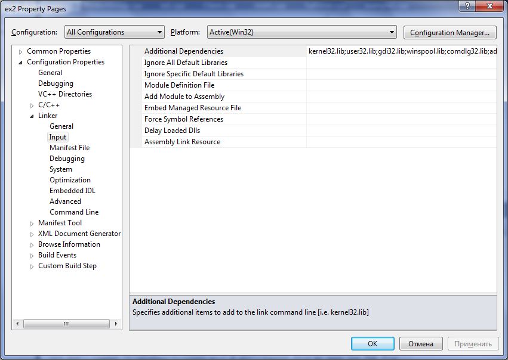
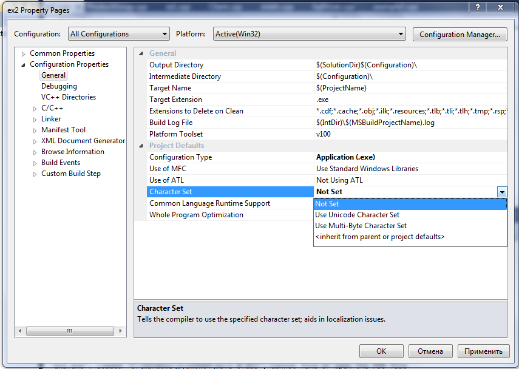
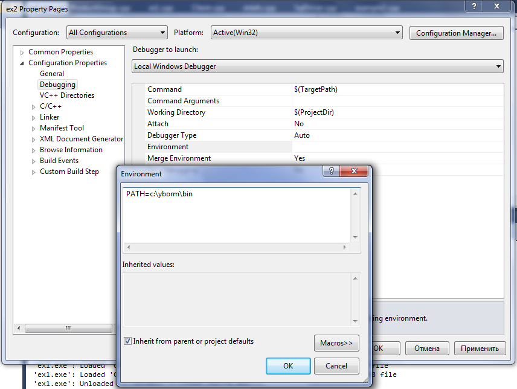
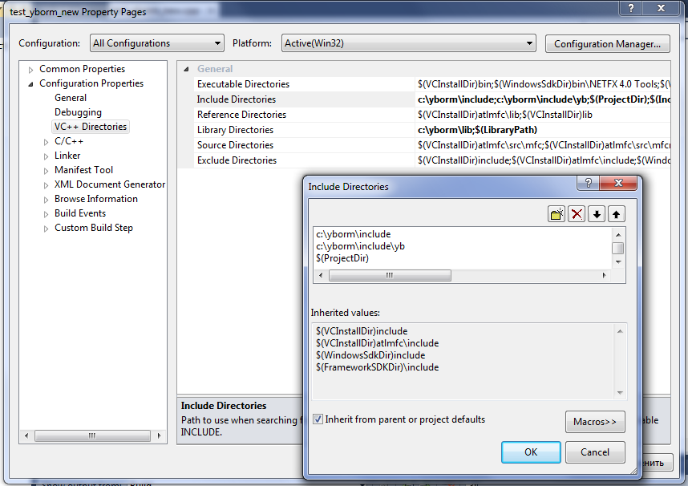
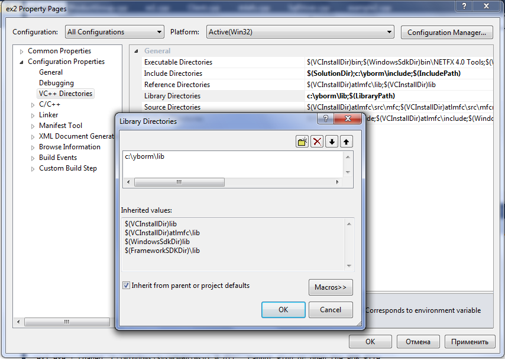
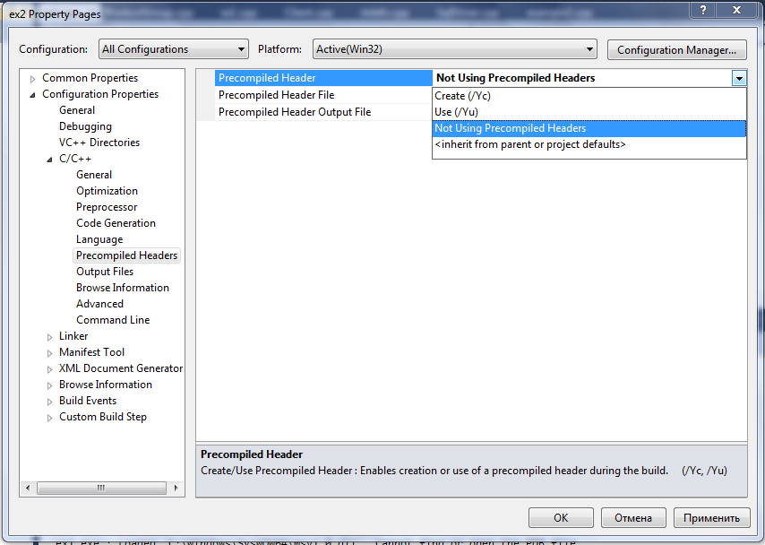
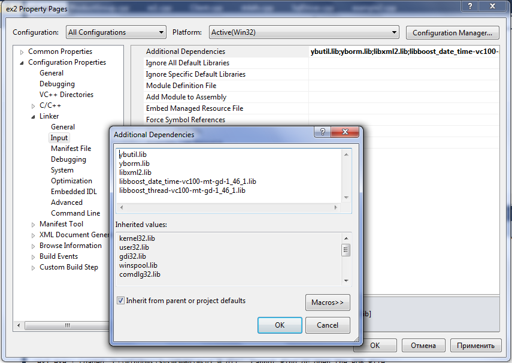

Select “All configurations”

At “Configuration Properties/General/Character Set” select ”Not Set”

At “Configuration Properties/Debugging/Environment” add “c:\yborm\bin” to your project's PATH

At “Configuration Properties/VC++ Directories/Include Directories” add “c:\yborm\include\yb”, “c:\yborm\include” and $(ProjectDir)

At “Configuration Properties/VC++ Directories/Library Directories” add “c:\yborm\lib”

At “Configuration Properties/C/C++/Precompiled Headers choose not to use this feature

At “Configuration Properties/Linker/Input/Additional Dependencies” add YB.ORM libraries and friends:
ybutil.lib
yborm.lib
libxml2.lib
libboost_date_time-vc100-mt-gd-1_46_1.lib
libboost_thread-vc100-mt-gd-1_46_1.lib
